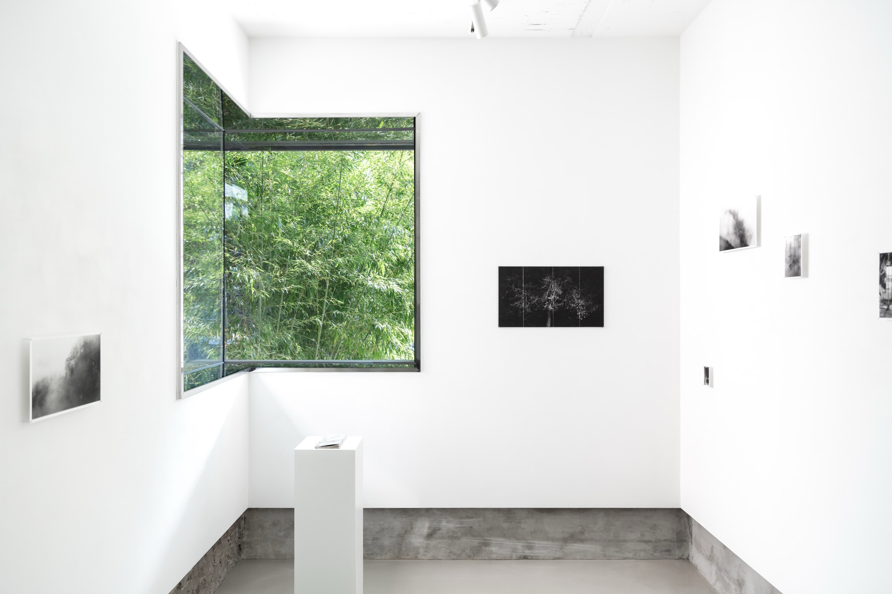
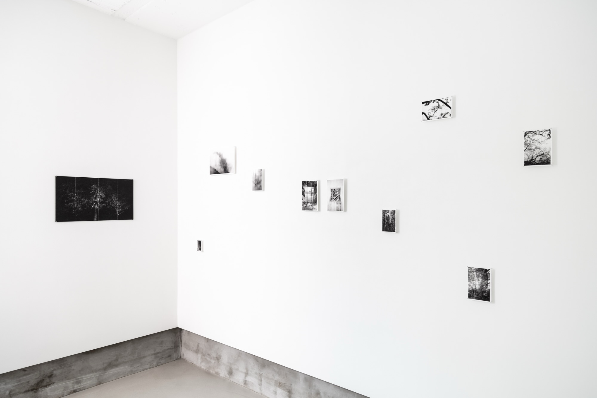
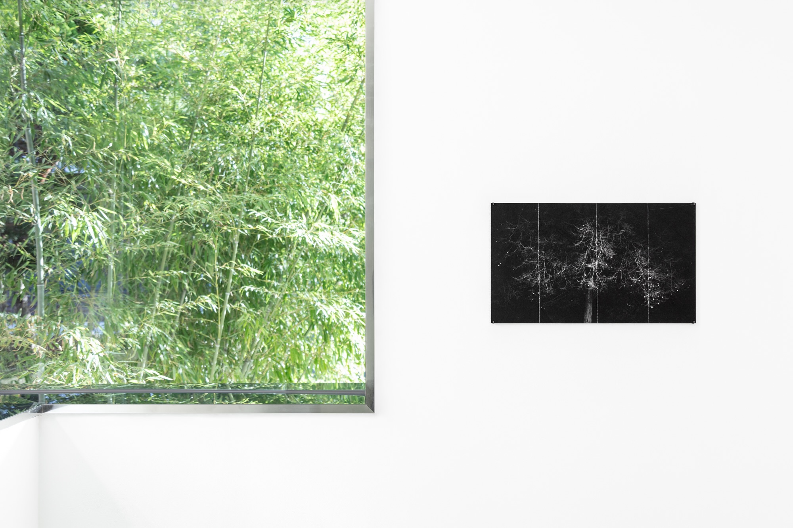
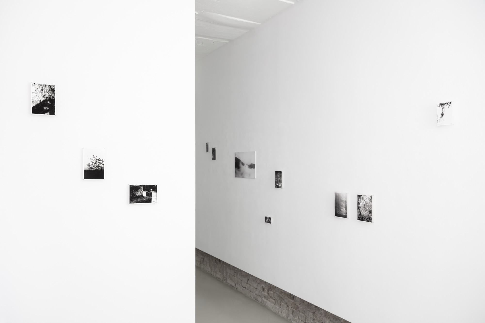
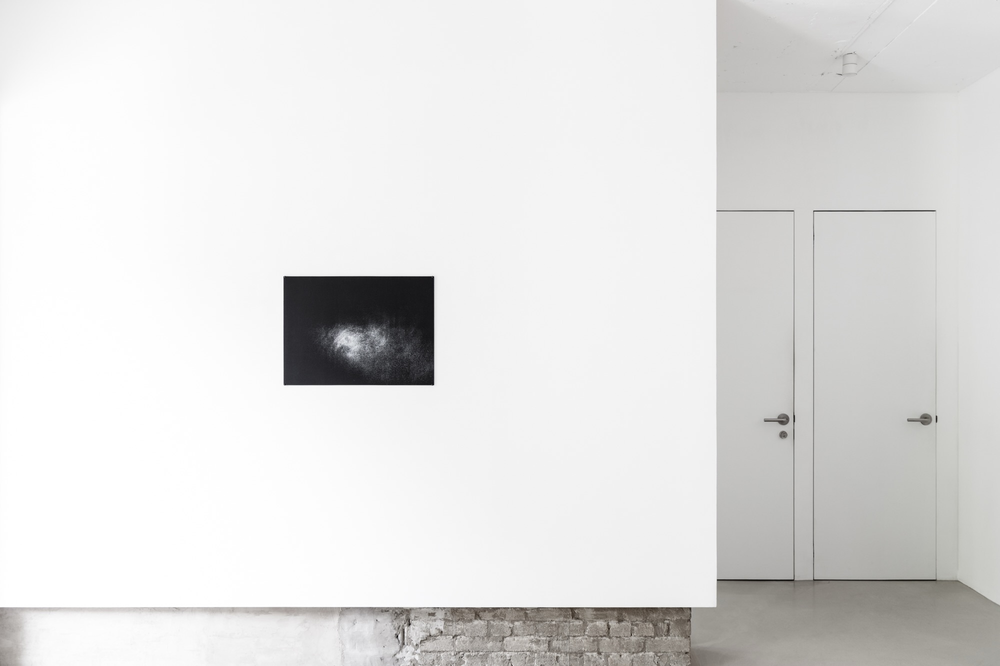
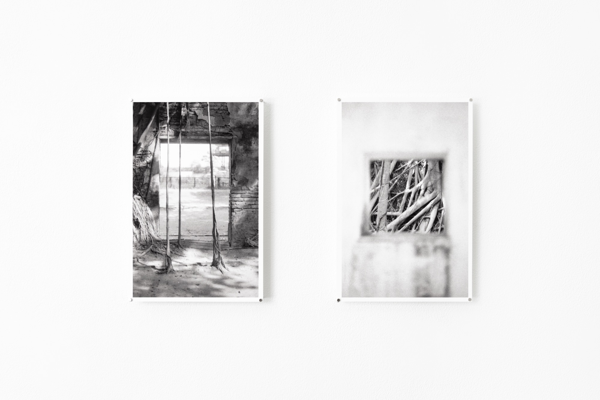
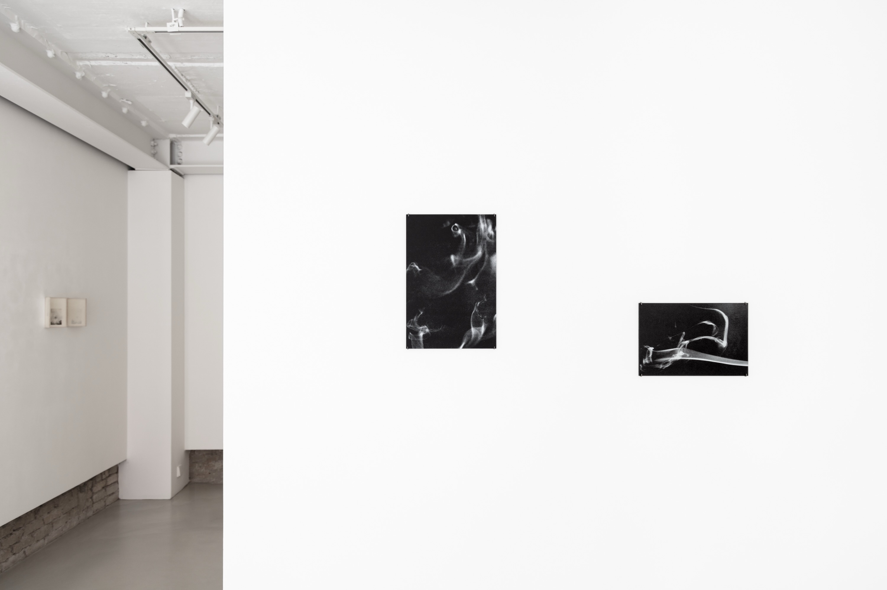
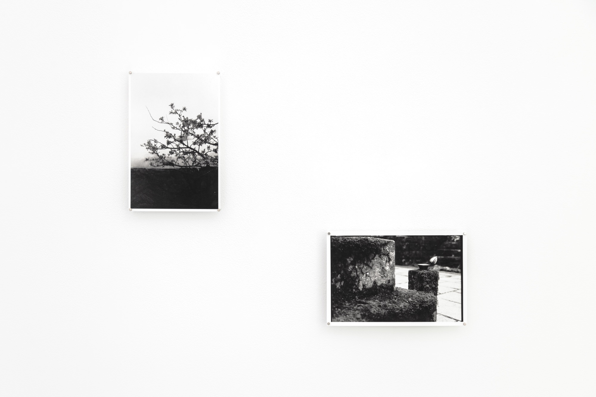
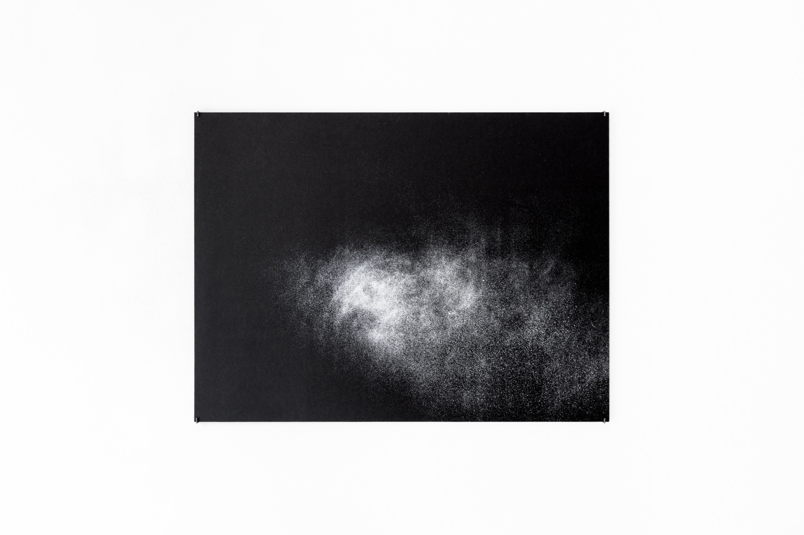
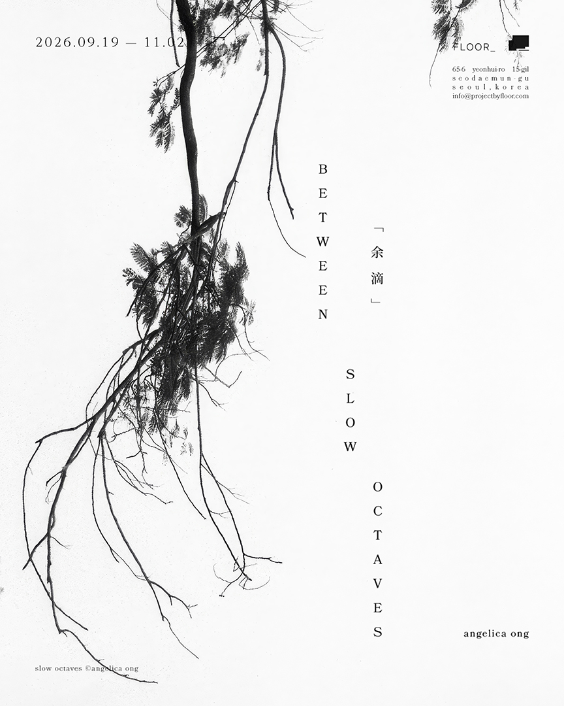

×

×

×

×

×
×

×

×

×

×

×
between slow octaves ｢余滴｣
19 Sep – 2 Nov 2026
FLOOR_, Seoul
solo exhibition by Angelica Ong 王歆惠
all images above credited to FLOOR_
between slow octaves「余滴」is a solo exhibition by Angelica Ong that brings together her ongoing inquiries into time — not so much what time is, but how its passage is felt and experienced — and walking as a method of photographic practice. Moving across photo installations, image-object assemblages, and artist books, the exhibition traces shifting sunlight, tidal marks, burning incense, collected dust, and the accumulation of small observations.
Unveiled for the first time, holding the sun: time’s imprint (1.387714227054312, 103.8793047957809) registers the sun’s shifting position across the course of a day through the cyanotype process. The work activates inherent synergies between subject and medium — the sun as a primordial source of light and measure of time, and photography as likewise a medium of light and time — allowing the sun to mark its own passage, leaving its figurative 'footprints in the sand'. Nearby, the sea tiles series attends to the rhythms of the tides in relation to the moon; a study of a day (2026) emphasises the indexical nature of photography and visualises duration through the recording of ash from burning incense—the consumption, dissolution, and transformation of matter; and Tsuka no ma no turns to dust, whose presence and quiet accumulation bear witness to absence and elapsed time. Displayed together for the first time, these works reveal a sustained interest in the various ways that time manifests itself through material residue, natural phenomena and change.
Ong’s newly self-published photo book slow octaves「余滴」brings together photographs gathered across long walks through different landscapes: a path towards a waterfall, mountain trails, old ruins overtaken by banyan trees, and other hidden sites encountered along the way. A corresponding photo installation provides audiences with a spatial, expanded experience of the book, with the images drifting across the gallery in a soft visual rhythm. This attentiveness to the fleeting and transitory is echoed in the sculptural artist book drifting nimbus. Inspired by the structure of a folding screen, it extends across and cuts space. Printed on gossamer-thin washi, its porosity beckons light to pass through it, allowing images to layer one upon the other and imbuing the images with structural and tactile qualities, inviting audiences to engage with the work’s materiality across shifting light, time, and relational contexts.
Material relationships continue through a series of image-object assemblages, in which photographs are brought into conversation with objects such as eggshells, bells and wood. Rather than treating the photograph solely as a flat image or record, these works emphasise its capacity to be held, assembled, weathered and encountered bodily. Subtle formal and material resonances emerge between image and object, drawing attention to weight, texture, fragility, sound and surface.
「余滴」(yoteki) refers literally to lingering or remaining drops—the drops left after rain or the small amount of liquid remaining at the bottom of a vessel—and figuratively to gleanings, incidental observations or supplementary reflections arising alongside a larger pursuit. Here, the term evokes photographs as residues of walking: impressions gathered slowly and almost peripherally, distilled from different places and moments into a single, quiet rhythm. In between slow octaves「余滴」, images move like notes through an octave—rising, falling and gently suspended, while remaining within the same subdued register, inviting audiences to dwell on the minute, meander the periphery, and take time.
ARTIST STATEMENT
My practice centres on time, its indexes, and language. How do we feel and experience time’s passing as something that is both cosmic and minute in scale? How can nature — a vast order of cycles, rhythms, and phenomena — guide our perception? And how does the photographic medium enable us to examine our world slowly and closely? Walking is also integral to my process, inviting chance and instilling a deliberate attentiveness to how I experience the world.
I approach photography as a semiotic medium. Rather than producing singular images, I treat photographs as words forming sentences, where meaning arises relationally through selection, repetition and sequence. My photographic practice thus operates as one vast, open-ended body of work—an ever-expanding dictionary. I often turn to ephemeral materials and natural phenomena as my photographic subjects, substrates and installative materials.
Artist books are also central to my practice, bringing images, materials and words together in a single encounter, allowing form, process and concept to intertwine with and reinforce one another. I challenge conventional notions of what an artist book can be, creating ‘pages’ and ‘spreads’ that are more than pages to turn, operating as layered sites of memory and meaning, embodying fragility and temporality.